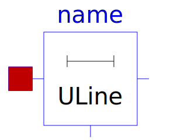
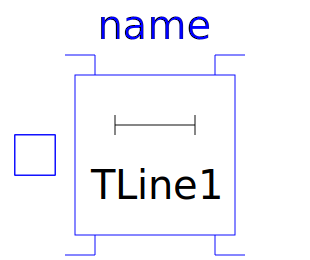

This package contains lossy and lossless segmented transmission lines, and LC distributed line models. The line models do not yet possess a conditional heating port.
| Name | Description |
|---|---|
| Lossy Transmission Line | |
| Multiple OLine | |
|  ULine | Lossy RC Line |
|  TLine1 | Lossless transmission line with characteristic impedance Z0 and transmission delay TD |
| Lossless transmission line with characteristic impedance Z0, frequency F and normalized length NL | |
| Lossless transmission line with characteristic impedance Z0 and frequency F |
Copyright © 1998-2019, Modelica Association and contributors